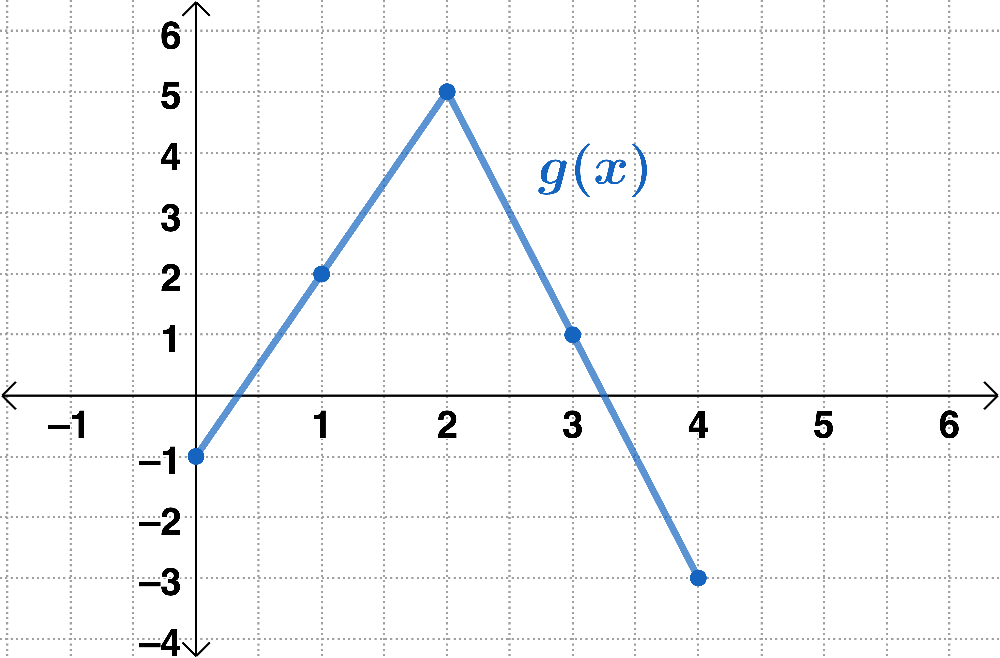

Skip to main content
Contents
Search Book
Search Results:
No results.
Readability settings Prev Up Next \(\newcommand{\foo}{b^{ar}}
\newcommand{\D}{\displaystyle}
\newcommand{\lt}{<}
\newcommand{\gt}{>}
\newcommand{\amp}{&}
\definecolor{fillinmathshade}{gray}{0.9}
\newcommand{\fillinmath}[1]{\mathchoice{\colorbox{fillinmathshade}{$\displaystyle \phantom{\,#1\,}$}}{\colorbox{fillinmathshade}{$\textstyle \phantom{\,#1\,}$}}{\colorbox{fillinmathshade}{$\scriptstyle \phantom{\,#1\,}$}}{\colorbox{fillinmathshade}{$\scriptscriptstyle\phantom{\,#1\,}$}}}
\)
For workspace between exercises, print this worksheet or download to your device by clicking the printer icon.
Worksheet Session #5 (Sections 2.4 and 2.5)
Directions: Answer each of the following as best you can. Feel free to discuss your thoughts about the questions with some peers around you. For additional practice problems and explanations, refer to the Math 142 textbook which is free and can be downloaded as a PDF at
Texas A&M The OAKTrust Digital Repository .
Getting Warmed Up and in the Right Mindset. 1.
Let \(f\) and \(g\) be two differentiable functions. Circle the correct Product Rule for derivatives.
\begin{align*}
\text{Option 1:}\amp\quad \frac{d}{dx}(f(x) \cdot g(x)) = \left(\frac{d}{dx}f(x)\right)\cdot\left(\frac{d}{dx}g(x)\right)\\
\text{Option 2:}\amp\quad \frac{d}{dx}(f(x) \cdot g(x)) = f(x)\cdot\left(\frac{d}{dx}g(x)\right)+g(x)\cdot \left(\frac{d}{dx}f(x)\right)\\
\text{Option 3:}\amp\quad \frac{d}{dx}(f(x) \cdot g(x)) = f(x)\cdot\left(\frac{d}{dx}g(x)\right)\cdot g(x)\cdot \left(\frac{d}{dx}f(x)\right)
\end{align*}
2.
Let \(f\) and \(g\) be two differentiable functions. Circle the correct Quotient Rule for derivatives.
\begin{align*}
\text{Option 1:}\amp\quad \frac{d}{dx}\left(\frac{f(x)}{g(x)}\right) = \frac{\frac{d}{dx}(f(x))}{\frac{d}{dx}(g(x))}\\
\text{Option 2:}\amp\quad \frac{d}{dx}\left(\frac{f(x)}{g(x)}\right) = \frac{g(x)\cdot\left(\frac{d}{dx}f(x)\right)-f(x)\cdot \left(\frac{d}{dx}g(x)\right)}{g(x)}\\
\text{Option 3:}\amp\quad \frac{d}{dx}\left(\frac{f(x)}{g(x)}\right) = \frac{g(x)\cdot\left(\frac{d}{dx}f(x)\right)-f(x)\cdot \left(\frac{d}{dx}g(x)\right)}{(g(x))^2}
\end{align*}
3. Fill in the blanks to complete the special cases of the chain rule.
The Chain Rule: If \(f\) and \(g\) are differentiable functions, then
\begin{equation*}
\frac{d}{dx}(f(g(x))) = f'(g(x))\cdot g'(x).
\end{equation*}
Special Cases of Chain Rule: If \(g\) is a differentiable function, \(n\) is any real number, and \(b\) is any positive real number, then
Generalized Power Rule: If
\(\displaystyle{y =(g(x))^n}\text{,}\) then
\(\D y\;'= \rule{2in}{0.05mm}.\)
Generalized Exponential (base
\(b\) ) Rule: If
\(\displaystyle{y =b^{g(x)}}\text{,}\) then
\(\D y\;'= \rule{2in}{0.05mm}.\)
Generalized Logarithm (base
\(b\) ) Rule: If
\(\displaystyle{y =\log_b(g(x))}\text{,}\) then
\(\D y\;'=\rule{2in}{0.05mm}.\)
Let Us Get Our Hands On. 1. Find
\(\D f'(x)\) given
\(\D f(x)=4x^{2}(3x^{2/3}+5x)\text{.}\)
2. Find
\(\D \frac{d}{dx}\bigg( 6x^{2} \cdot 3^{x} + \frac{3}{x^{-2}}\bigg)\)
3. Find the equation of the line tangent to the graph of
\(\D g(x)=\ln(x)\sqrt{x}\) at
\(x=1\text{.}\)
4.
Determine if the work below is correct. If it is not correct, state why and work the problem correctly.
\begin{equation*}
\text{Given} \ \ \D f(x)=\frac{\sqrt{x}}{2^x}, \quad \D f'(x)=\frac{\frac{d}{dx}\bigg(\sqrt{x}\bigg)}{\frac{d}{dx}\bigg( 2^x \bigg)}=\frac{\frac{1}{2}x^{-1/2}}{2^x\ln2}
\end{equation*}
5. Given
\(\D g(x)=\frac{\sqrt[3]{x^{2}}+3}{e^{x}-4x^{3}}\text{,}\) find
\(\D g'(x)\text{.}\)
6.
Find the derivatives of each function given below. Do not simplify your answers after you have applied the appropriate derivative rules.
(a)
(b)
\(\D f(x) = \sqrt{2x^{2}-e}\)
(c)
\(\D f(x) = \ln(x^{2})+x-3^{x}\)
(d)
\(\D f(x)=\sqrt{e^{x^2}+5x}\)
(e)
\(\D h(x)=\log_{3}\left((x^{2/3}+4x)^{8}\right)\)
(f)
\(\D f(x)=4\bigg(\frac{3}{x^{4}}+2^{x}\bigg)^{5}\)
(g)
\(\D g(x)=\frac{3x}{\sqrt{e^{x^2}+5x}}\)
(h)
\(\D h(x)=e^{4x}\ln\bigg(x^{2}+\sqrt{x}\bigg)\)
7.
Let
\(f(x)\) be a differentiable function. The values of
\(f(x)\) and
\(f'(x)\) are given in the table below and the graph of
\(g(x)\) is shown.

Graph of a function
\(g(x)\) plotted on coordinate axes. Starting on the left, the graph increases away from, but never touches, the horizontal asymptote
\(y = -6\text{.}\) The graph reaches a peak above the
\(x\) -axis, and then decreases along, but never touching the vertical asymptote
\(x=3\) until it leaves the coordinate axes. The graph then increases to the right of the vertical asymptote, approaching but not touching the horizontal asymptote
\(y = -6\) until it leaves the coordinate axes.
Table 1.11. Values of \(f(x)\) and \(f'(x)\)
\(1\) \(3\) \(4\)
\(2\) \(2\) \(5\)
\(3\) \(1\) \(6\)
(a) Let
\(h(x)=g(f(x)).\) Find
\(\D h'(3)\text{.}\)
(b) Let
\(k(x)=f(g(x))\text{.}\) Find
\(\D k'(1)\text{.}\)
(c) Let
\(\D m(x)=\frac{h(x)}{x^{2}}\text{.}\) Find
\(\D m'(3)\text{.}\) (
Hint: Use part (a) to find \(h(3)\) and \(h'(3)\text{.}\) )
8. Find all
\(x-\) value(s) at which the tangent line to the curve
\(y = \frac{x^{2}-3}{2e^{x}}\) is horizontal.
9. The weekly profit for a company selling candles can be modeled by
\(P(x) = 0.7\sqrt{x^{5/2}-17}-137\) dollars per
\(x\) candles sold. Find the marginal profit when 200 candles are sold. Round your answer to the nearest cent.
1.
The cost to produce \(x\) keychains in a day for a particular company is given by \(C(x) = \sqrt{20x+2}+175\) dollars. Use marginal analysis to approximate the cost of producing the 10th keychain.
\(\displaystyle \$ 0.22\)
\(\displaystyle \$ 0.11\)
\(\displaystyle \$ 0.72\)
\(\displaystyle \$ 0.74\)
2.
The derivative of \(f(x) = \frac{13x^{2}}{e^{x}+1}\) is
\(\displaystyle \D f'(x) = \frac{13x^2e^x-26x(e^x+1)}{(e^x+1)^2}\)
\(\displaystyle \D f'(x) = \frac{13x^2-e^x-1}{e^x+1}\)
\(\displaystyle \D f'(x) = \frac{26x(e^x+1)-13x^2e^x}{e^x+1} \)
\(\displaystyle \D f'(x) = \frac{26x(e^x+1)-13x^2e^x}{(e^x+1)^2}\)
3.
Find \(h'(2)\) given that \(f(2) = -2,\) \(f'(2) = 5\text{,}\) and \(h(x) = (3x^{2})\cdot f(x)\)